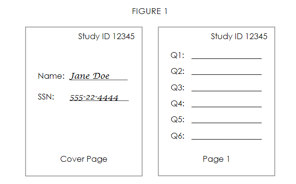

Data Collection Structures
You can view slides from this talk here
Overview
In this training I continue to cover establishing systems that help make a project successful. These structures are the backbone of your project and without them in place, it can create many, many headaches for project staff, can compromise the confidentiality of your data, and may even make your data unusable.
If you are collecting your own original data as part of your study, for example a randomized controlled trial study, data management best practices should be interwoven throughout your data collection process. I will discuss the role of data management in data collection instrument design, tracking of participants and data collection, as well as data storage and security. I will not go in to the minutiae of project management, including things such as recruiting participants, consenting participants, training data collectors, or scheduling data collection as those are less tied to data management and more aligned with project coordination.
However, I will note that it is important that project coordinators and PIs work with a data manager to develop the language used in a consent form. Most, not all, education research that is anonymous or de-identified will fall under the exempt IRB category (minimal risk), allowing you to write your own consent rather than using an IRB template. If you plan to share your data upon conclusion of your project, either via a repository or your own data request system, you will want to make sure your consent has clear language about your intent to share your de-identified data. If applicable, also include language regarding your intent to collect identifying information in a linking key table for tracking purposes that will be stored separately from your de-identified data. Shero and Hart from Florida State University have a great Informed Consent Template.
Meyer (2018) has several helpful dos and donts for language to use in your consent form including:
✔️ Don’t promise to destroy your data (unless your funder explicitly requires it)
✔️ Don’t promise to not share data
✔️ Do get consent to retain and share data
✔️ Do incorporate data-retention and sharing clauses into IRB templates
✔️ Do be thoughtful when considering risks of re-identification (ex: small sample size for sub-groups)
✔️ Don’t promise that research analyses of the collected data will be limited to certain topics
Other helpful consent resources:
üìë Within & Between podcast
üìë University of Pittsburgh
üìë University of Guelph
üìë ICPSR
üìë Shero and Hart: Working with your IRB
Final note before diving into this content: Before any project begins, all data collection instruments and protocol must be submitted to an Institutional Review Board (IRB) for approval. The IRB, a formal organization designated to review and monitor human participant research, ensures that the welfare, rights, and privacy of research participants are maintained throughout the project. Some of the systems I cover throughout this series will be vetted by an IRB (ex: original data collection), others will not (ex: documentation, style guide). This training will not cover the ins and outs of the IRB, but I wanted to note that while this training provides many suggestions for setting up your data collection systems, you must always have required forms approved by IRB before moving forward with original data collection.
Data Collection Instruments
When it comes to the intersection of data management and data collection, there is a lot to consider. If at all possible, take some planning time to create data collection instruments and procedures that keep your data secure, valid, minimize errors, and relieve future data cleaning headaches. I am going to cover some common instruments created to collect original data, and ways you may be able to make those instruments more streamlined and efficient.
Quick note: Everything you read below is from my personal experience as well as a summary of what I have heard while interviewing other researchers. As such I may be missing out on even better ways to set up these systems. I am open to feedback!
Surveys
Research teams may be restricted in how they collect their survey data due to limited resources, research design, or even the population being studied. However, if at all possible, I highly recommend collecting surveys using software/web-based tools that directly feed into a table or database rather than through paper forms. The reasons are:
- Forms are easier to maintain/update
- Reduces cost and effort of manual printing and collating
- Can be distributed in many ways (links, emails, QR codes)
- Easier to track completion
- More efficient than manually entering or manually scoring data (including TeleForm)
- Reduces errors in both data collection as well as data entry/scoring
- Can reduce missing data
- Quick turnaround of clean data
- Removes the need to physically store paper data
- Allows for assigning correct variable names, value codes, and labels within the form
- Provides more data privacy than paper data
- Bonus: Streamlines pipeline for real-time reporting/dashboarding options (can pull data using APIs)
- Bonus: Able to use crowdsourcing options such as MTurk and Prolific
Note: With the COVID-19 pandemic in 2020, I think many of us doing education research have had to make a huge switch, very quickly, to collecting data electronically and remotely. This is yet another reason to create/utilize web-based data collection instruments in particular, to prepare for the unknown, and provide flexibility to collect data even when you aren’t able to physically be in schools.
Web-based Surveys
There are many web-based survey platforms (Ex: Qualtrics, Survey Monkey, Google Forms, Microsoft Forms, SurveyCTO) you can use to develop surveys. If those existing platforms do not meet your needs, you can always build your own web-based application to collect data.
- You can hire a developer to build an app for you
- You can build your own application to collect data in tools such as R (ex: using {formR}) or Tableau
No matter what platform you use, building your survey requires some up front planning. First and foremost make sure to build a survey that is both valid and reliable. Secondly, take time to think how the data you collect will be translated into a database. Remember, every question answered is then stored in a database within the platform that you will later download to a file. Here are several suggestions to adhere to when creating your survey that will provide you with more accurate data and reduce future data management headaches (While I will not provide a tutorial for how to implement each suggestion, they are all possible in a platform such as Qualtrics):
- Name all your survey items the correct item name from your data dictionary (Ex: Rename the Qualtrics default Q1 to s_gender)
- This isn’t a name that your survey participants will see, but it is the variable name you will see when you download your data
- Code all values as they are in your data dictionary (Ex: 1=strongly agree, 2= agree, etc.)
- In Qualtrics you can do this using the “recode values” option
- As you edit your survey, check that your coded values did not change as you updated your survey (It happens!). This is why options such as “tools -> reset recode values” exist in programs like Qualtrics, which allow you to start over with sequential back end coding.
- Use data validation to reduce errors and missing data
- Content validation:
- Make GPA a numeric only field (restrict the number of digits)
- Make birth date a date only field
- Response validation
- Force response (a respondent must answer the question to move forward)
- Request response (notifies the respondent that they skipped a question and asks if they still want to move forward)
- Content validation:
- If there is a finite number of response options, and the number isn’t too large (less than ~ 20) use a drop-down list rather than open-ended field
- School Name as a drop-down removes the potential for people to enter school names differently (some which you may not be able to decipher)
- (“South Middle School”, “South Middle”, “SOUTH”, “Soth Mid”)
- (“South Middle School”, “South Middle”, “SOUTH”, “Soth Mid”)
- An exception to this rule is for categories such as demographics. For example, for gender you may prefer to allow people to enter their gender in an open text box rather than giving them a pre-determined list, there are tools, such as the R package called gendercoder, that help you recategorize this data through coding after it is collected (we will talk about these tools more in later trainings).
- School Name as a drop-down removes the potential for people to enter school names differently (some which you may not be able to decipher)
- If there is an infinite number of response options or the number of options is large, use an open text box.
- Consider limiting the number of characters allowed in the text box unless you want to allow users to write paragraphs of information.
- Using open ended text boxes does not mean you can not re-group this information into categories later through syntax. It is just more time-consuming and requires interpretation and decision making on the part of the data cleaner/analyst.
- Only ask for one piece of information per question
- Don’t ask: Please list your ACT or SAT score.
- Do ask: Please list your ACT score. Please list your SAT score. In separate questions.
- Make your question wording abundantly clear
- Don’t ask: Are you from this county?
- Do ask: Do you currently live in this county?
- Make the question format the same across studies. For continuity, it is a good practice to keep variable names and formats the same within and across studies.
- If anxiety1 was a slider question, on a scale from 1-10, with one point increments in a previous study, build this question the same way in the next study
- Do make your response options clear in the question
- Don’t ask: Which parent are you? (m/f)
- Does m=male or mother?
- Do ask: Which parent are you? (mother/father/legal guardian/other)
- Don’t ask: Which parent are you? (m/f)
Feedback
- If you are unsure if your survey is going to download the way you want it to, make some sample data! Send the survey to a few staff members and have them take the survey using a “test” name. Then you can download the sample data and see if it looks the way you expect it to. You can always remove this test data either within the survey platform itself or delete it during your cleaning process.
- Sending your survey out to staff to test is also a great opportunity to get feedback! Was there any language that was unclear? Did you forget some skip logic? Did you leave off an option or maybe an entire question? Get this feedback early as it is very difficult to make changes mid-project!
üìë Pew Research and Qualtrics both provide comprehensive best practices in questionnaire design.
Offline Surveys
If your site or participants do not have WiFi and/or email access, you generally have a few options.
One option is to work with a survey platform (such as Qualtrics or SurveyCTO) that allows you to create a survey online, administer it using an offline survey app on your phone or tablet, and then upload that data back to the survey platform once you have an internet connection again.
Still, depending on your study, participants, and resources, building a web-based survey may not be possible and/or it may not be the best option for your project. So your second option is a paper survey.
- If you must collect paper survey data I recommend the following to reduce error:
- Have very clear instructions/training on how to complete the paper form
- Make sure to write survey questions to the best of your ability that prevents respondents from being confused and circling multiple answers or writing other answers in the margins
- If your staff are implementing surveys out in the field, have them check for missing data in the field before they return to the office
- Check all forms for missing data again when they return back to the office
- If you are using a mail survey, check for missing data when the survey is returned
- To improve data entry issues:
- Consider using something like TeleForm to reduce hand entry of data
- I personally have not used this but I know TeleForm designs machine readable forms that can later be scanned rather than hand entered
- Ultimately though, if staff are hand entering data from paper forms, follow guidelines laid out below in Data Entry.
- Consider using something like TeleForm to reduce hand entry of data
Assessments
For the same reasons I recommend web-based tools for surveys, I also recommend web-based tools for assessments.
Web-based Assessments
If a web-based option already exists for your assessment, the obvious answer is to simply use this. For example the Renaissance STAR assessment is administered online.
However, if your assessment is only available in paper form, consider converting it to a web-based form if at all possible without altering the integrity of the assessment. You can do that in several ways:
- Build the assessment into an online survey platform.
- Build your own application to collect data. - If you build the assessment into your own app or into a survey platform, set it up using the same recommendations for web-based surveys (ex: back end coding to match the actual values on the forms, back end naming variables correctly, etc.)
Once data is collected, proceed with scoring as usual, following the guidelines of the specific assessment.
Offline Assessments
If there are no web-based options, or connecting to WiFi is not an option for your project, then of course, keep with the paper assessments and follow the guidelines of the specific assessment. If the assessment requires any manual scoring (such as the Woodcock Johnson), be sure to implement an error checking system (such as the one mentioned in the paper surveys section).
Observations
In person classroom observations, qualitative or quantitative, can be collected using a web-based tool.
Web-based Observations
Observation forms can be built into an online survey platform or your own application that data collectors can access on their phones, tablets or laptops in the field. If the observation has duration codes, you can build this into your app or there are existing applications that have built in timers. If the observation simply needs to last X amount of minutes, use a web-based form and you can always just have observers set timers on their phones, similar to what they may do using a paper form.
Offline Observations
If WiFi is not available to you in the field, consider making an electronic form that still eliminates the need for data entry (so not a paper form) and that ideally connects to or creates some type of database or table. Then have data collectors enter data into this form on a device in the field. This does not have to be high-tech. It could simply be:
- An Excel file that is pre-built with every observation field and the options for each field are limited to only the correct options through a drop-down list.
- Create a Microsoft Access form that is connected to a database
- Utilize the offline survey options provided by tools such as Qualtrics (see Offline Surveys section)
- Build or use existing offline tools. For duration code classroom observations, we’ve used software built by a developer at Vanderbilt to collect frequency and duration observation data. It stores observation text files to the data collectors device.
Collecting electronic data in the field becomes tricky when you are having people use tools simultaneously that aren’t connected to a shared database (such as separate Excel files or Access databases). When you use an online/offline survey platform, everyone’s data is feeding into the same database/table. However, when you are using separate Excel files for instance, everyone is storing data on their own device. This requires you to set up a way for collectors to share files (ex: Dropbox, Box, or whatever your institution deems is a secure system) and then for you to merge those files together across data collectors. It is definitely trickier, although possibly still a more efficient and reliable method that paper forms and hand entry of data.
All of the above assumes observations completed in the field. Of course if you record observations and code them from the luxury of your office, then the possibilities are wide open and I would recommend to follow any of the above methods that connect to a shared database, such as the online observation form to collect all data seamlessly in one location.
Interviews or Focus Groups
I don’t work much with qualitative data so I won’t say much here. Interviews and focus groups are typically recorded (at least audio) whether they are collected in-person or online. Then if you transcribe (some people simply just take notes), transcription is either outsourced to a company, done in-house, or done using transcription software and is usually kept in a file such as a Word document or Google doc. For this type of qualitative data, I have no preference for how it is collected and transcribed as long as the transcription is accurate and it is a format that is appropriate for any analysis software you plan to use.
Secondary Data Sources
If you receive any non-public, confidential, secondary data sources, such as school district records, just make sure you ask for them in a format that is usable to you. For instance, I have received school district records in PDF form, and while, after much data wrangling it can be usable, it would be much easier to request to receive this information in tabular format.
Consents
Most studies require researchers to collect consent and/or assent on participants. Informed consent is collected on any participant, 18 years or older. If a student is under 18 years old, a parent consent as well as a student assent is collected. Consents and assents are typically collected one of two ways.
- Web-based: Consents and assents can be collected through secure web-based tools, such as Qualtrics or DocuSign. Consult with your IRB to see what tools are approved.
- Considerations for this method include:
- It does require your participants to have access to the internet and possibly also email.
- Schools are very unlikely to give you parent email addresses. You may need to have school personnel send the parent consent link out on your behalf (or send home a paper form with a QR code)
- Benefits to this method include:
- Student assents can be completed in the classroom on any electronic device or in a computer lab with internet.
- It reduces the manual labor of having to pick up paper forms from schools or have them mailed/scanned. You can simply download or access the consents online at any time.
- Student assents can be completed in the classroom on any electronic device or in a computer lab with internet.
- Paper form: If you use a paper form, just make sure to have systems in place to allow you to track exactly where a form came from and who it belongs to. I say this as sometimes a person’s printed name or signature is illegible or you receive a student assent back but you are unsure which classroom the form came from.
- Here are a few methods that may help alleviate future problems:
- If a school is willing to provide class rosters, you can pre-label your student and parent consents/assents before sending them home. That way when a form is returned you know exactly what classroom that student belongs to and what that student’s name is. IRB should not have a problem with researchers collecting rosters, but some schools may (think FERPA) so this may not be possible.
- Another option is to ask teachers to print student name and their name (teacher’s names) on forms before they are sent home (or when they are returned)
- Make sure to have both a print your name line and a signature line on all consent forms. Even with adult consent forms.
- If a school is willing to provide class rosters, you can pre-label your student and parent consents/assents before sending them home. That way when a form is returned you know exactly what classroom that student belongs to and what that student’s name is. IRB should not have a problem with researchers collecting rosters, but some schools may (think FERPA) so this may not be possible.
All-in-One Study
Last I wanted to mention that it is also possible to build all or almost all of your study into one tool (depending on your study). Using a tool like Qualtrics, or building your own tools in applications like R Shiny, you can build your consent, randomization, study ID assignment, survey and assessment all in one tool that participants can access in one simple link. Lucy D’Agostino McGowan has a great example in her slides here.
Data Entry
If you end up having to use paper forms to collect any of your data and need to manually enter that data, then there are several steps you can take to minimize error in that process.
- Set up databases for staff to enter the data
- Consider using a database tool such as Access, FileMaker, RedCap, or QuickBase rather than a spreadsheet. Most of these tools allow you to set up form for users to enter data into that then are submitted into a table on the back end. This reduces data entry errors.
- If you must use a spreadsheet tool such as SPSS or Excel, be aware of some of the limitations and possible issues:
- The formatting that Excel sometimes applies to fields may cause errors in your data (dates get formatted as numeric, strings get formatted as dates, and other nightmares)
- It’s easy to enter data into the wrong row or column in a spreadsheet as you are able to click anywhere in the spreadsheet. You may even write over existing data on accident.
- One way to prevent some errors in these tools is to restrict entry in fields (only allow numeric values if you want staff to enter numbers rather than the actual words associated with response options). Also, add drop down lists for each of your categorical questions, only allowing acceptable responses.
- The formatting that Excel sometimes applies to fields may cause errors in your data (dates get formatted as numeric, strings get formatted as dates, and other nightmares)
- Develop a data entry protocol. Your protocol can/should include:
- How and where staff access, store, and enter data
- Is it stored in a locked file cabinet? What drawer?
- Do they return the data back to that same drawer after entry or store in a new drawer that denotes the data has been entered? If returning back to the same drawer, does the staff member initial the form to denote that it has been entered?
- What is the file path to the data entry database?
- Is it stored in a locked file cabinet? What drawer?
- Have very clear instructions for data entry including:
- What they should do if they come across missing data (skip the cell, enter a certain number such as -999, etc.)
- What they should do if a respondent circles multiple answers
- What they should do if a respondent completed multiple surveys/assessments
- What they should do if they come across missing data (skip the cell, enter a certain number such as -999, etc.)
- Set up a system for error checking
- I highly recommend you implement a system where you double enter a portion, if not all of your data, to check for entry errors.
- This looks like creating two identical databases, and having two different staff members (not the same staff member), enter data into each databases. Assign staff member A to enter data into database 1 and staff member B to enter data into database 2.
- To track the entry of the physical copies of these forms, you can simply have each staff member initial the form after it has been entered in their respective database.
- Then when all data is entered in both forms, the following things happen:
- The project coordinator checks both forms/files to make sure the N of each file matches what their participant tracking database says they collected (i.e. - someone didn’t forget to enter a form)
- Then a syntax is run to check for errors (I will discuss this more in later trainings)
- If errors are found, they are rectified by going back to the original databases and correcting the error in database 1 or database 2, wherever the error occurred. Then the syntax is run again until no more errors are found
- Then both files are accurate and either database 1 or database 2 can be used as your analysis file.
- The project coordinator checks both forms/files to make sure the N of each file matches what their participant tracking database says they collected (i.e. - someone didn’t forget to enter a form)
- This looks like creating two identical databases, and having two different staff members (not the same staff member), enter data into each databases. Assign staff member A to enter data into database 1 and staff member B to enter data into database 2.
- I highly recommend you implement a system where you double enter a portion, if not all of your data, to check for entry errors.
üìë Reynolds and Schatsnieder from Florida State University have some great suggestions here for setting up a data entry station and protocol for any manual data entry that needs to occur.
üìë Data Management Episode 1 and 2 of Within and Between podcast has some great examples of how to set up data entry protocol.
üìë While I haven‚Äôt read The Practice of Survey Research, it looks to have an entire chapter devoted to data entry that may be worth reading
üìë Read Data Organization in Spreadsheets to understand how data should and should not be organized if you use a spreadsheet tool for data entry.
Data Collection Security
The simplest way to maintain participant privacy is to collect anonymous data. If you collect anonymous data, no participant identifying information should be collected in your instruments (name, email, date of birth, etc.). You will also want to make sure to not collect IP addresses as they can be used to identify an individual’s computer. It’s also important to recognize that if you collect anonymous data, you will not be able to link data across measures or across time.
More commonly in education research you will be collecting some identifiers (ex: name). However, in order to maintain participant confidentiality you cannot keep those identifiers in your research data. You will need to assign unique IDs to all participants and replace all identifying information with that study ID. In longitudinal studies in particular, you will be using that unique participant ID to link data across time and across measures.
Quick thought: Identifiers
It is important to remember that you must have some sort of identifier built into every data collection instrument (survey, observation form, assessment, etc.) in order to link data across measures and time. Whether you have participants enter an identifier like their name into a form or you already have study ID linked to a form in some way. You just need to make sure you aren’t accidentally collecting anonymous data. If you do not have identifiers in your instruments, you will not be able to link your data across measures and time.
Even if you are purposefully collecting anonymous data, if you have randomized participants, say schools, you will still need an identifier for the randomization block/cluster built into your instrument (ex: sch_id) or you will not be able to cluster based on that information.
Web-based Data:
When sending out or completing in-person web-based surveys/assessments, you can do one of the following to connect your data to a participant (this is not all-inclusive):
- Send/give individual links to participants (where each survey link is connected to a study ID within the system). This can usually be done easily in a survey platform such as Qualtrics using a contact list.
- This is the most error-proof way to ensure study IDs are entered correctly. You load in IDs directly from your participant database so that when data is downloaded, the correct ID is already linked to each participant and name is never attached to the downloaded data. The participant never has to enter any identifying information into the form since their identifier is linked on the back end.
- Make sure to build a data check into the system. When a participant opens their unique link, verify their identity by asking, “Are you first name?”. Only use first name to protect other’s identity. If they say yes, they move forward, if they say no, the system redirects them to someone to contact. This ensures that participants are not completing someone else’s survey and IDs are connected to the correct participant.
- Provide one link to all participants and separately, in an email, in person, or by mail, provide participants with their study ID to enter into the system.
- We have used this method when we are conducting surveys/assessments in computer labs or on tablets in schools.
- This can possibly introduce error if a participant enters study ID incorrectly. Similar to above, after a participant enters their ID, verify their identity by asking, “Are you first name?”. If they say yes, they move forward, if they say no, the system redirects them to someone to contact.
- We have used this method when we are conducting surveys/assessments in computer labs or on tablets in schools.
- Send one link out to all participants and have each participant enter their name and other identifying information. I say “and other identifying information” because what the participant enters needs to be unique and not duplicated. Some people in your study may have the exact same name as someone else in your study. To prevent causing confusion, collect two pieces of information such as name and DOB so you are able to link that individual to the correct study ID.
- This may be the most problematic out of all the options in terms of data management, privacy, and potential for errors.
- Your options for working with this data are:
- Download the data, replace name and other identifying info with study ID. Replacing name with ID when there are incorrectly spelled names, with various formatting issues, can potentially start to introduce errors and data management troubles. As mentioned above, collect more than one piece of identifying information (name and teacher name for instance) in case two students have the same name or a name is illegible.
- If you have not yet assigned study IDs, and your link includes your consent/assent, you can have the system assign study IDs in the back end for you, and when you download the data, those IDs will be tied to data, but not the identifying information, which will be stored separately. This is possible in a tool such as Qualtrics.
This image shows what a data de-identification system looks like where identifiers are collected and need to be removed for the analysis dataset. Table 1 would be the incoming survey data with identifiers, Table 2 would be your Participant Database (which I talk about more below), and Table 3 is your de-identified analysis dataset.

Source: J-PAL
Ultimately, which method you use for web-based links will first, depend on the data collection instrument. For instance, an online assessment may only have one link and so option #2 or #3 above may be your only option. However, for online surveys, any option is possible. Secondly, it will also depend on your method of dissemination. If you are sending survey links out yourselves to teachers, option #1 is going to be the best method. If a school system will not give you student emails, and you need to have teachers send out links to students, #3 may be best your best option. That method reduces the burden on teachers (having to send multiple links in #1) and potentially reduces error (asking teachers to track multiple links or multiple IDs to send to students in #1 and #2).
Quick thought: Public links
All of the options above assume you are making a private link that you are only sending to existing or potential study participants (i.e.: students in a classroom, teachers in a school). However, there may be times you need to publicly recruit and collect data for your study. I’ve been reading about the threat of bots with public online surveys and the havoc they can wreak on a research study. If you need to use a public link, some suggestions for securing your survey include:
- Not posting the link on social media
- Using captcha verification
- Do not automate payment upon survey completion
- Include open-ended questions
- Build attention/logic checks into survey
- Ask some of the same questions twice (once early on and again at the end)
But even with these additions to the survey, you will want to check your data thoroughly before analyzing it and before providing payments to participants. Look for things such as participants who sped through the survey too fast, inconsistent answers on questions, nonsensical answers, timestamps that don’t make sense, or identical surveys.
Ultimately, the recommendation is to not have public survey links, and to only use unique links for participants. Even if this means extra work where you have a public link with a screener, and then after participants are verified through the screener, you then send a private link.
Resources:
üìë Melissa Simone, Behavioral Scientist
üìë Melissa Simone, STAT
üìë Cloud Research
Offline Data:
If you take paper forms into the field consider doing the following to connect your data to a participant:
- Write the study ID on the form and then use either a removable label with participant name and place that over the ID or attach a cover sheet with identifying information such as student name. When you return to the office, you can remove the name label/cover sheet and be left with only the ID on the form.
- It is this ID only that you will enter into your data entry form, no name.
- Removing the label/cover sheet also ensures that your data entry team only sees participant ID when they enter data, increasing privacy by minimizing the number of people who see see participant name.
- Double and triple check against your participant database that the study ID is correct before removing the label or cover sheet
- Make a plan for the labels/cover sheets (either shred them if they are no longer needed, or store them securely in a locked file cabinet and shred them at a later point)
 Source: Poverty Action Lab
- If you need a roster of consented participants in the field with both name and study ID, you can do one of two things:
- Bring your tracking database into the field, on a secure device (such as a tablet) and refer to that database as needed.
- Print a roster with name and study ID and keep those rosters secure in the field (not laying out on a table) and either shred them when you return to the office if you no longer need them or store them securely.
Other considerations:
- Add a line to your survey introduction, instructing participants to close their browser at the completion of their survey so that others may not access their responses.
- Make sure you are using and/or building data collection and storage tools that are approved by your IT department and are considered secure for the level of sensitivity of data you are collecting.
- Make sure all paper forms are kept in a folder (or even a lock box) with you at all times in the field and they are promptly returned to the office and stored according to your IRB security rules, typically behind two locked doors (ex: in a locked room, in a locked file cabinet).
- Make sure your in-field data collection devices (phone, tablet, laptops) are password secured and never left open and unattended and all identifiable information is encrypted (data is encoded so that only those with a password can decipher it). It is also possible to encrypt an entire device, protecting data from being transferred across application. You may also consider remote wiping capabilities on portable devices in case of loss or theft J-PAL.
Resources:
üìë University of Guelph
Participant Database
A participant database is often called a “master list” or “key” by IRB as this is your only database that can link your participants’ true identity to their study ID. As you recruit and consent participants, you will record their name, assign them a study ID, and enter any other necessary identifying information (ex: email) into the participant database.
In addition to recording a participant’s name and assigned study ID in this database, this is also the location you will track any and all activities that occur with those participants.
There are many pieces of information to document/track for a research study including:
- Consents and assents collected
- Incentives/payments provided
- Data collection completion
- Participant movement
And all of this needs to be documented across time (waves and cohorts) and space (classrooms and sites).
A thorough and complete participant database is vital to:
- Securing data de-identification
- Project coordination and record keeping
- Consort diagram and participant flow creation
- Dataset verification
While the coordinator typically oversees the updating of this database, it is extremely helpful to consult with a data manager when setting up this system to make sure you include all relevant fields and to make sure the database is understandable when someone needs to verify information.
Building a database
In a nutshell, the participant database will either be set up in a database (a series of tables), or a series of spreadsheets. At the most basic level, you will create one table/sheet per entity in your study (entities being participants, sites, districts, etc.). Example: Student table, Teacher table, School table, District table.
A participant database can be set up in a program such as:
- Microsoft Access
- Excel
- QuickBase
- Airtable
- REDCap
- Google Tables
- Google Sheets/Google Forms
- Forms that feed into a relational database, maintained using a SQL (structured query language) database engine such as SQLite, MySQL, or PostgreSQL
The possibilities really are endless and it all depends on what your team has access to and how tech-savvy your team is. Some systems require specific programming knowledge (ex: setting up a SQL database). I personally prefer using a relational database system, which allows relating tables to one another (a schema), eliminating redundant data. Without getting too technical, database normalization increases performance, decreases storage, and makes it much easier to make updates to tables as changes occur. There are many options out there, but Access is just one example of a tool that allows you to relate tables and allows some form of querying.
Consider this first structure below, with 3 very simple tables (a student table, a teacher table, and a school table). Each table has a primary key that makes individuals within that table unique and each table can be connected through a foreign key. For example in the student table, the primary key is stu_id and the foreign key is tch_id which connects students to the teacher table. Using a query language (such as SQL) in systems such as Access, we can pull multiple tables together ad hoc to make a table with all the pieces of information we need.
Note: Not all relational databases require technical skills and coding. Systems such as QuickBase build relations between tables and allow querying through their point and click, low-code application.

Say for example, we needed to pull a roster together for each teacher. We could easily run a query, such as this SQL query, that joins the student and teacher tables by tch_id and then pulls the relevant teacher and student information from both tables:
SELECT Student.first_name, Student.last_name, Teacher.first_name AS t_f_name, Teacher.last_name AS t_l_name, Teacher.grade_level
FROM Student INNER JOIN Teacher ON Student.tch_id = Teacher.tch_id
ORDER BY Teacher.last_name, Teacher.first_name, Student.last_name, Student.first_name
Would produce a roster like this:
| first_name | last_name | t_f_name | t_l_name | grade_level |
|---|---|---|---|---|
| Johnny | Rose | Stevie | Budd | 3 |
| Moira | Rose | Stevie | Budd | 3 |
| Jocelyn | Schitt | Stevie | Budd | 3 |
| Patrick | Brewer | Twyla | Sands | 4 |
| Ray | Butani | Twyla | Sands | 4 |
| Ted | Mullens | Twyla | Sands | 4 |
| Alexis | Rose | Twyla | Sands | 4 |
Now consider these 3 tables below that are not relational (such as 3 tabs in an excel spreadsheet). Since we are unable to set up a system that links these tables together, we need to enter redundant information into each table (such as teacher or school name) in order to see that information within each table without having to flip back and forth across tables to find the information we need.
Using a relational structure allows us to eliminate redundant data. This not only saves us time and energy but reduces errors as well. You can imagine how useful that is.
- You don’t have to type things like teacher name and school name over and over for every student in the student table.
- When a teacher changes their last name, you don’t have to go back to the student table and update that last name for all of their students.
Ultimately though, set up this participant database in whatever system works for you. It just needs to be set up. This is system is vital to protecting the confidentiality of your participant data as well as record keeping for all of your data collected. If it is easier for you and your project, you can build these tables as individual spreadsheets in a workbook rather than relational tables. If you do, remember it will be more difficult to query information and you will most likely want to include duplicate information across tables (teacher and school name in your student table for instance). This will prevent you from having to flip back and forth across sheets.
Relational database resources:
üìë Database vs.¬†Spreadsheet
üìë 7 Excel Spreadsheet Problems
üìë Jenna Jordan has a great example of how and why to build a relational database
üìë QuickBase explanation of table-to-table relationships
üìë Relating tables in Google Tables
üìë Airtable vs Google Sheets
Fields to include
As you build your tables/sheets, you will need to decide what fields to include. As you create those fields, consider the following:
- Set data types for your fields (ex: character, integer, date, boolean, etc.). Restrict entry values to these types to reduce error.
- When naming your fields, adhere to variable naming best practices (no spaces between words, no special characters, all field names in a table should be unique).
- Do not lump separate pieces of information into the same field (ex: separate first name and last name into two fields).
Fields to include at the beginning of your study:
- Study ID/Location ID (Primary Key and Foreign Keys for relational databases)
- Participant/Site name
- Contact information
- Other IDs necessary for linking data (such as a state ID for linking to student school records)
- Relevant identifiable information (such as date of birth, email)
- Schedule information needed for the study (block, class time, grade level)
- Consent/Assent received
- Randomization info (cohort, group)
- Number assessed for eligibility (# of consents sent out, # of students in class)
- Payment information (ex: W-9)
- Condition (treatment/control)
- If your project coordinator needs to stay blinded, you will want to store condition information elsewhere
- Movement/Dropped (ex: track if a student moved out of the school during fall data collection)
Quick thought: Study IDs
As you recruit and consent participants/sites, you will add them to a participant database under an assigned study ID (ex: stu_id, tch_id). These IDs allow participants/sites to remain confidential in your research data. That ID (typically a 2-6 digit random numeric or alphanumeric value) will follow that individual/site throughout the life of the study and should be unique to that individual/site. This number never changes.
Depending on your study design, some participants may have the opportunity to be re-recruited into the study more than once. For example, we had a study where three cohorts of 5th grade students were recruited over three years. Therefore, the same 5th grade teachers were often recruited back into the study each cohort. If you have a similar study design, you still keep that same study ID (in this case the same tch_id) for that participant. If you want to identify the unique wave or cohort that a participant is brought back into the study, make sure you have other variables in your data that help you understand why a study ID occurs in your data more than once (ex: a cohort variable). The study ID concatenated with the cohort provides you with a unique row identifier.

Jenna Jordan has a great blog post on UIDs.
After your participants are recruited and you begin data collection, you can imagine there are many pieces of information to track such as incentives/payments and data collection completion. These fields will also need to be added to your participant database.
Fields to track over time (for each wave of data collection):
- Data collected (for each unique piece of data)
- Observation collected (complete/incomplete)
- Interview collected (complete/incomplete)
- Survey collected (complete/incomplete)
- Observation collected (complete/incomplete)
- Notes (ex: This is where you want to track ANYTHING you may need to remember at a later time such as reasons for missing data, errors in the data, etc.)
- Payment/incentives provided
- Other optional pieces to collect:
- Attempts to collect data
- Communication with the participant
- Dates data collection completed
- Attempts to collect data
This data collection information/tracking may seem trivial, but it is vitally important to the integrity of your research study for these reasons:
- A project coordinator cannot keep track of what has been collected in their head. They need to have that information tracked and stored so they know what still needs to be completed.
- A PI at some point will come to a project coordinator and say, why are we missing data on X number of students or on this teacher during wave Y of data collection. The notes section of this database is how you will be able to answer those questions. This has happened with our projects multiple times.
- A data manager will approach a project coordinator and say they have 105 students in their student survey data for wave Y, is that accurate? A project coordinator can then refer to their participant database and say, no actually we should have 107. Maybe they find that 2 surveys were never entered into the survey study dataset. This has personally happened to me more times than I can count.
The participant database is what holds the project together. I cannot stress this enough.
Quick thought: Tracking Best Practices
A few best practices for tracking that improve project coordination and data management:
- Only track data that you physically have
- Never track data that someone tells you they collected
- Mark that info in “Notes” and track when you have the physical/electronic data
- Never track data that someone tells you they collected
- Track daily throughout data collection
- Don’t wait to track until the end of data collection
- This improves the accuracy of your tracking as well as your project coordination
- Only track complete data
- If a survey is only partially completed and you plan to send it back out for completion, mark this in the notes but do not mark it as completed
Entering data
For the purposes of this database, there are probably two most common methods of entering data.
- Enter data directly into a datasheet view. This looks exactly as you would expect, a tabular form where you enter data for each participant in a row. You can do this in systems such as Access, QuickBase, Excel and Google Sheets.
- Pros: It’s the quickest and easiest method. It also allows you to view all the data holistically.
- Cons: Can lead to errors if someone enters data on the wrong row/record. Not all systems have the ability to allow you to directly enter data in datasheet view.
- Create a form that is linked to each table that you enter data into. Data entered into that form is automatically inserted into the tables you created. You can do this in systems such as Access, QuickBase, and even Google Forms linked to Google Sheets.
- Pros: Reduces data entry errors as you are only working on one participant form at a time.
- Cons: More time consuming. Not all systems have the ability to set up forms.
There are many other ways to load data into a database but for this use case (tracking participation in an education research study) these are probably the most common methods. However, you can read about several other methods here.
Also, most recently I’ve heard people mention the idea of automating at least some data entry/tracking through the use of unique scannable codes or through integration of your online data collection platform and your tracking database (ex: Qualtrics and Quick Base). This type of tracking most likely requires some technical skills to set up this linking process. But it’s a cool idea and may reduce at least some error that occurs in manually tracking data. For example, by creating a unique QR code/barcode (linked to a participant ID) that is added to every paper survey, similar to what is used for tracking inventory, you can scan that code when data collection is complete to “check in” a survey to your participant database. Or by integrating your survey platform and participant database, you could add new participants to your database as they complete their consents and surveys online.
QR code/barcode resources:
üìë Creating Barcodes in Excel
üìë Scanning Barcodes into an Excel Spreadsheet
üìë Creating Barcodes in Word
üìë Scanning QR codes into Google Sheets
üìë Creating Barcodes in Access
üìë Scanning Barcodes into Access
Integration resources:
üìë Examples of Qualtrics Integration
üìë Examples of QuickBase Integration
Considerations
There are two issues you may want to consider when developing these systems:
At the most basic level you will have one table per entity (student, teacher, etc.), as we discussed. However, you can imagine these tables/sheets can become very wide if you are collecting data on a lot of measures or many waves of data collection and very long if you are collecting data on a lot of participants over several cohorts. If this is the case, you may want to consider building a more complex schema (such as different tables for each time period or for each cohort) that again link together through primary and foreign keys. You can read more about creating a schema here.
Another issue that may occur is, if team members other than the project coordinator will be tracking data collection, you may want to limit their access to participant identifying information. If this is true, similar to above, you may consider building a more complex schema where you create separate tables for participant demographic/identifying information and tables with only participant ID and data collection tracking, that again can be linked through primary and foreign keys.
Final thoughts
Other overall preferences for your participant database include:
- Use some sort of versioning as you will be constantly updating and adding to your tracking system and there may be times when you need to check an older version
- Use a system that allows querying/filtering of data (pull tables of information as needed such as rosters or percent of surveys collected per classroom, filter table to only see students who have not dropped)
- Use a system that easily allows export of data if you need to print rosters or print labels, etc.
Although data storage is our next topic, I want to mention right now, that this participant database clearly has identifiable and protected information. Therefore it should be stored securely and apart from all other study data. This is the only file that directly links your participants’ true identity to your confidential study data and it should never be stored in the same folder as your study data. Additionally, it should have limited access. Only those who need access, such as the project coordinator, data manager, and any other staff assisting with tracking, should have access to this file for security purposes.
Resources on securing a participant database:
üìë University of Guelph
üìë Poverty Action Lab
Last, most of what I have covered here is relevant for studies where you plan to de-identify your data. If you are collecting anonymous data, you do not need a participant database per se because you are not collecting any identifying information on your participants. With that said, you may still wish to and probably should set up a simple system to track your data collection efforts.
Data Storage
Whether you are working with your own original collected data, or you are working with extant data provided to you from an entity such as a school district, or publicly available data, you need to consider short-term secure data storage. I say short-term because this is how you will store your data while you are actively collecting data for your project. Data retention/long-term storage, after your study is complete, will be discussed in a later training.
In general you will most likely be working with one of four types of data and will need to store your data according to the type of data:
- Anonymous data (Data at no time has ever had identifying information tied to it and can never be linked back to an individual)
- Confidential data (Personally identifiable information (PII) in your data has been removed and names are replaced with a code and the only way to link the data back to an individual is through that code. Identifiers are stored separate from the research data in your tracking database/master list.)
- De-identified data (Data is considered de-identified when all PIIs are removed and there is no longer a link to a participant’s identity anywhere; i.e., all names are replaced with a code and all tracking databases/master lists that link to that code are destroyed at the conclusion of a study)
- Identifiable data (Data that includes personally identifiable information (PII))
- PII includes any of the following (and more):
- Name
- Address
- Zipcode
- SSN
- DOB
- Phone number
- District or School Name
- District/School ID (attached to school records)
- PII includes any of the following (and more):
For this section I am going to generally describe the level of security needed to store your data depending on the type of data. However, I am not a security expert and in an effort to not explain security incorrectly, I would like to refer readers to this document from J-PAL. It is one of the most comprehensive documents I have come across regarding data security.
Storing a participant database
Because your participant database contains identifiable information about your participants, this data must have the highest security. The specifics of this security will be set by your university or institution. However, the general rules for storing this type of data is:
- It should be stored separately from your confidential study data
- This data should have limited access (only available to the few individuals who actually need to interact with this data)
- It should be stored on a password-protected, university/institution sponsored shared server or cloud service with encryption (never a personal computer)
- Since this is your only crosswalk between your study IDs and PIIs, make sure to backup this data regularly
Storing electronic records
Your typical study data files are in formats such as csv, tab-delimited, excel, text, word doc, or a statistical program file such as .sav, .dta, .R, or .sas. No matter the file type, your study data should all be de-identified/confidential, only including study IDs and no other identifiers. However, there are still some security precautions you should take.
- It should be stored on a password-protected university/institution sponsored shared network or cloud service
- Limit access to your data folder to only those who need to work with the data. This ensures no one intentionally or unintentionally makes changes to your data.
- Your de-identified study data should be kept separate from any file that can link an ID to a participants true identity (ex: your participant database)
- Backup this data regularly
- Extant data you acquire, such as student record data from schools and districts may have its own set of regulations such as FERPA and HIPPA so it is worth checking that your storage meets those requirements as well.
Storing detachable media
This includes items such as external hard drives, flash drives, or CDs.
- Store behind two locked doors
- Do not store at a personal residence or leave in a vehicle
- Password protect these items
Storing audio/video data
A newer type of data collection is occurring since the COVID-19 pandemic, and that is observations, interviews, and focus groups occurring via video conferencing. This data is especially sensitive as it may include names and faces as part of the recording. Again, you will want to refer to your specific institution guidelines, but generally:
- You will want to use approved software that is licensed by your Institution
- You will want to make sure that software and cloud storage is HIPPA and/or FERPA-compliant if you need it to be
- Conduct the the video call in a secure/private location
- If recording the session, make sure that participants are notified that the session is being recorded
- Sessions are stored on an Institution approved cloud service or managed service
Note: These same data security rules will also apply to data that is recorded in person. And furthermore, any data that is recorded on detachable media will need to follow the detachable media guidelines.
Storing paper data
- Your paper data should be de-identified/confidential (names removed).
- There are exceptions to this:
- If you collect paper consents/assents which typically have participant name/signature (no ID) on them you will store those as is.
- If you need to keep paper rosters (with both names and IDs) for the purposes of data collection
- These rosters should be shredded when no longer needed to reduce the number of documents outside of your participant database that can link your participants’ true identity to their study ID
- There are exceptions to this:
- As I mentioned earlier in this training, a typical IRB rule is to store paper data behind two locked doors for security. This typically means a locked file cabinet behind a locked door.
- Never store paper data at a personal residence or leave in your vehicle
- When transporting data from a site to your office, consider keeping your files in a lock box and use a personal vehicle for transportation rather than public transit.
General security rules
Again, I am not an IT professional, but some general security rules to keep in mind for all data and devices are:
- Make regular back-ups of your data
- Have a policy in place for who will perform and check the backups, what the backup schedule will be, and where the backups will be stored, (DataONE)
- Implement the 3-2-1 rule, 3 copies of your data, on 2 different types of storage media, in more than 1 location.
- Password protect your devices (with strong passwords)
- Never leave a device open and unattended. Lock your device and go offline when not in use.
- Don’t send confidential data via email
- Keep your virus protection up to date
- Use encryption at all points in the data flow (from collection to storage)
- Encrypt any identifiable data on portable devices
- If any identifiable information is collected, promptly replace it with study IDs and delete/destroy identifiable information as soon as possible after data collection
- Only provide access to those who need access to your data, and remove access when people are no longer affiliated with your institution or the study
- Never store identifiable information on your desktop
- Consider having staff review and sign a data responsibility agreement that discusses the ways they will work with the data ethically, responsibly, and securely
- When deleting data, consider using data erasing software to remove sensitive data
- Have a data security plan, in writing, for every project (who has access to what data, what happens when someone leaves the team, data retention period, data sharing plan, data training requirements)
- There are data classification levels (DCL) that help you identify the security you need based on the type of data you have. Knowing what level your data falls under can help you start conversations with your IT department to decide if you are meeting the level of security you need to meet FERPA and HIPPA requirements if applicable.
- Last, talk with your IT staff for recommendations on storage, security, and file sharing. They are the experts!
Resources on data security:
üìë University of Guelph
üìë University of Pittsburgh
üìë University of Michigan
üìë Princeton University
üìë University of Nevada
üìë Pacific University Oregon
üìë Florida International University
üìë DataONE
üìë IPA
üìë Karl Broman
üìë University of Missouri
üìë Foundational Practices of Research Data Management
üìë University of Pittsburgh, RDM
üìë Veeam
üìë University of Connecticut
üìë Brandeis University
üìë Reasons to consider SharePoint for data storage
üìë Reasons to consider Institutional Servers for data storage
Directory Structure
No matter where your team stores your files, it is important to develop a logical directory structure. It makes it so much easier to find your files and it facilitates sharing within and outside of your team. You will want to build this structure into your style guide and implement it generally across all of your projects to create cohesion. The most important thing is to allow files to be findable, have a structure that allows you to control user access, and to keep folders shallow enough that you don’t reach a limit on the allowable length of a path name for any file.
At the highest, organizational level, you will want to have separate folders for each of your projects, as well as an overall Team folder that houses general documents related to your team functioning (meeting notes, hr documents, team expectations). You will want to develop a style guide that covers general rules across all folders and house that style guide in an easily accessible location (ex: Team Wiki and/or a README in each project folder)
Then, within each project folder you will want to build a hierarchy, something like this:
levelName
1 project-name
2 °--life-cycle-folder
3 °--time
4 °--content
5 °--participant
6 °--archiveLevel 1: The name of the project
Level 2: General research life cycle folders (Ex: data, documentation, project management, intervention, tracking)
Level 3: For longitudinal studies I tend to like the third level to be time period or grouping sub-folders (Ex: cohort 1, or wave 1)
Level 4: Specific content folders (Ex: raw data, syntax, clean data)
Level 5: Participant specific folder (ex: student, teacher).
Level 6: All previous versions of files can go in an archive folder to reduce clutter
More details on setting up this structure can be found in training_3.
Resources: